Useful for engineers designing a repeatable AI-coding workflow: whether to cap task size near a 'smart zone' instead of relying on a 1M-token context window, whether to replace default plan mode with a structured interview step before ge...
This traces how the workflow stays inside the smart zone, replaces plan mode with a grilling interview, then hands vertical slices to an AFK agent under TDD (ours). The 100K marker and other figures are Pocock working numbers from one code base, not a benchmarked result (ours).
“Every time you add a token to an LLM, it's kind of like you're adding a team to a football league”
said at 03:37“it doesn't matter whether you're using 1 million uh context window or 200K, it's always going to be about this”
said at 04:07“You want this to be as small as possible. Cuz if you have a ton of stuff in here, if you have 250K tokens, like I have seen people put in there”
said at 07:41“The LLM really has only a couple of things here. It just has the skill and it has the description of what I want to do”
said at 15:55“you need to keep a handle on the code. You need to understand what's in it. You need to shape it because the code is your battleground”
said at 13:21“TDD I found is absolutely essential for getting the most out of agents”
said at 66:21“which comes from the Pragmatic Programmer called traceable bullets or vertical slices. And traceable bullets really transformed the way I think about actually getting AI to pick its own tasks”
said at 41:55“So, it loves to code layer by layer. So, in other words, in phase one, it will do all of the database stuff, all of the schema, all of the you know, all the stuff related to that unit”
said at 42:55“if our code base is easy to test, then our code our feedback loops are going to be better, and the AI is going to do better work in our code base”
said at 76:43“I think of there is being two types of tasks in the AI age. Where you have human in the loop tasks, where a human needs to sit there and do it”
said at 26:20(ours) This is a live workshop with extensive ad-libbed audience Q&A; treat the ~100K-token 'dumb zone' marker and specific figures (a 25K-token grilling session, 744 closed issues in his own repo) as Pocock's own working numbers from a single code base, not a benchmarked or independently reproduced finding.
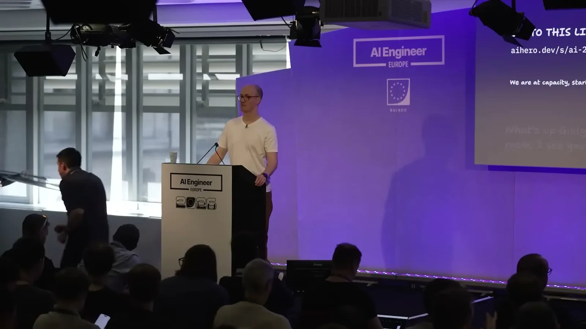
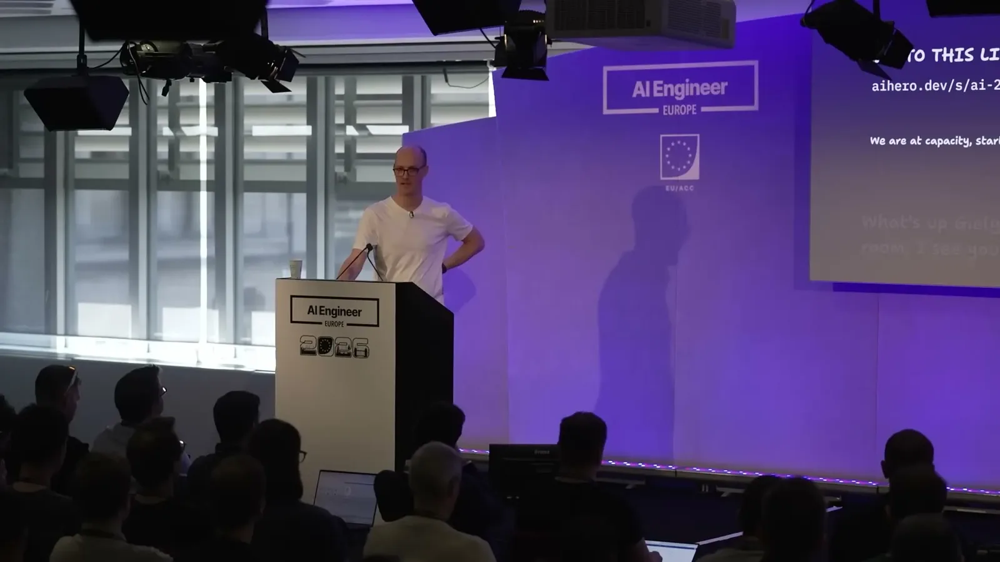
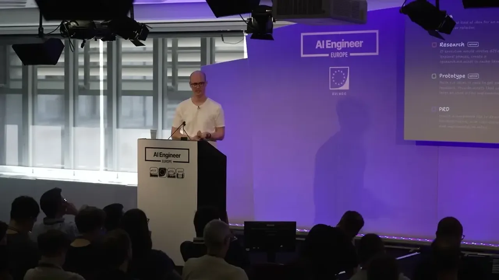
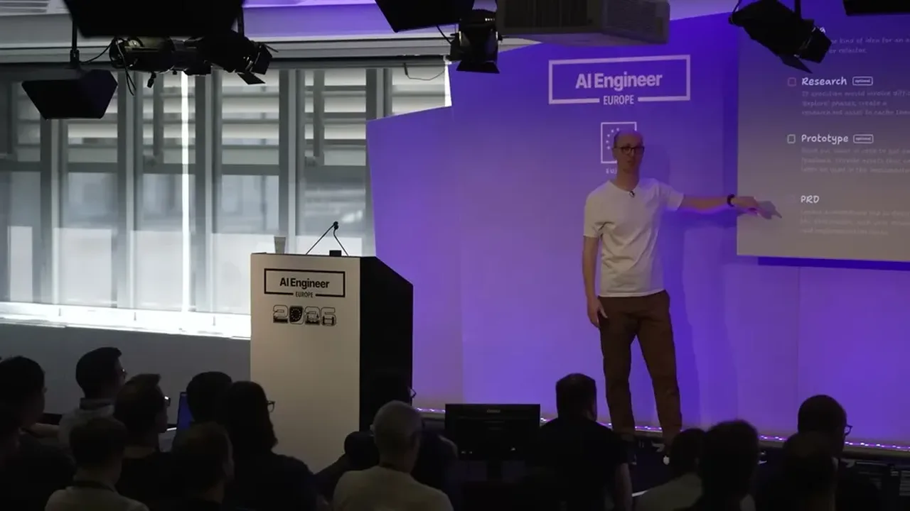
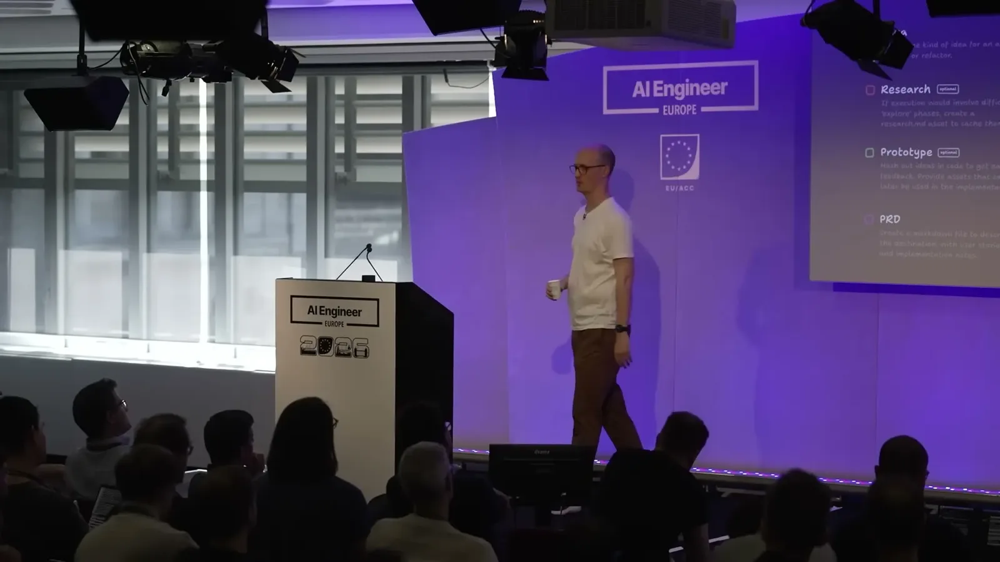
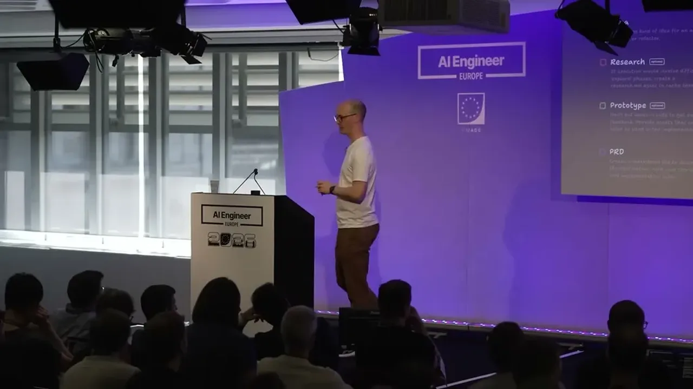
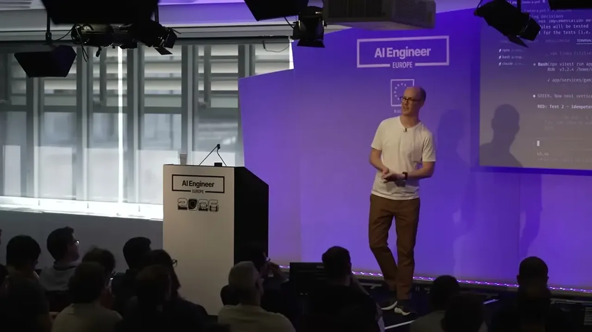
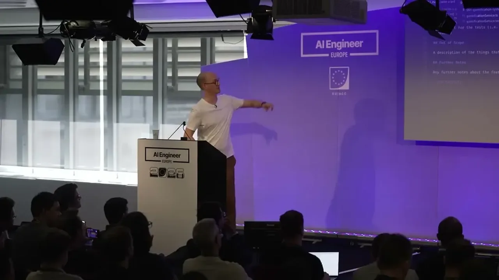
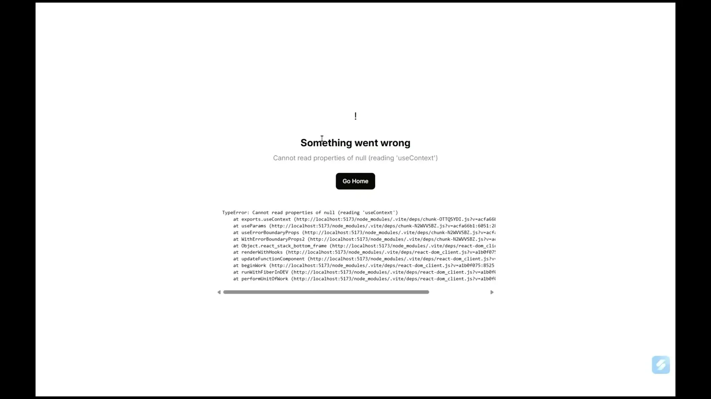
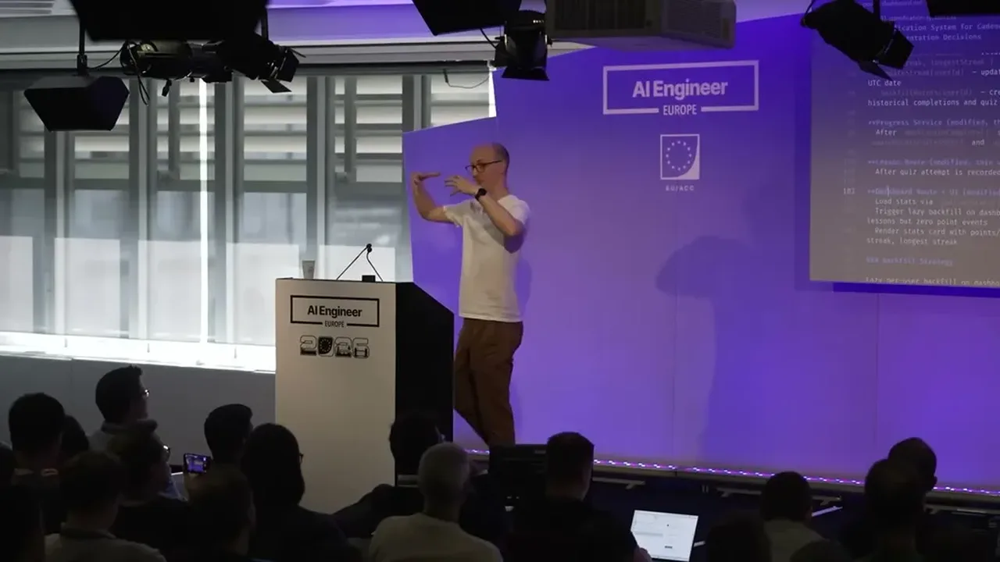
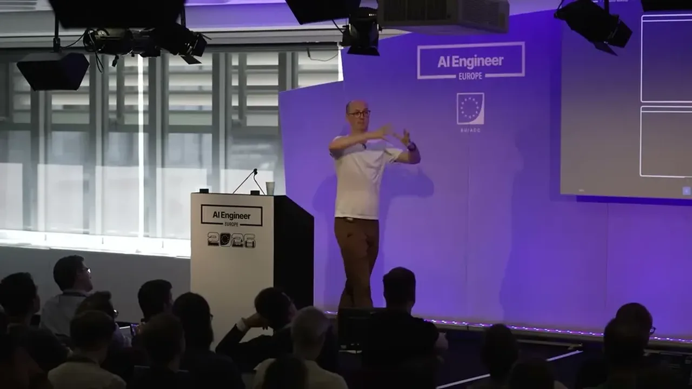
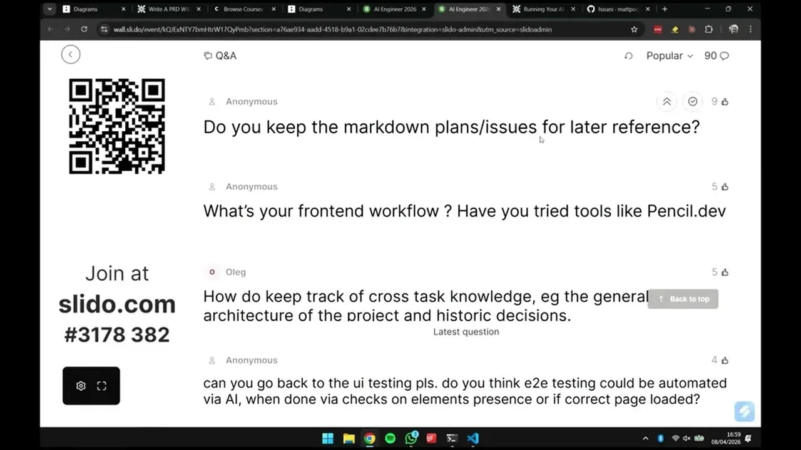
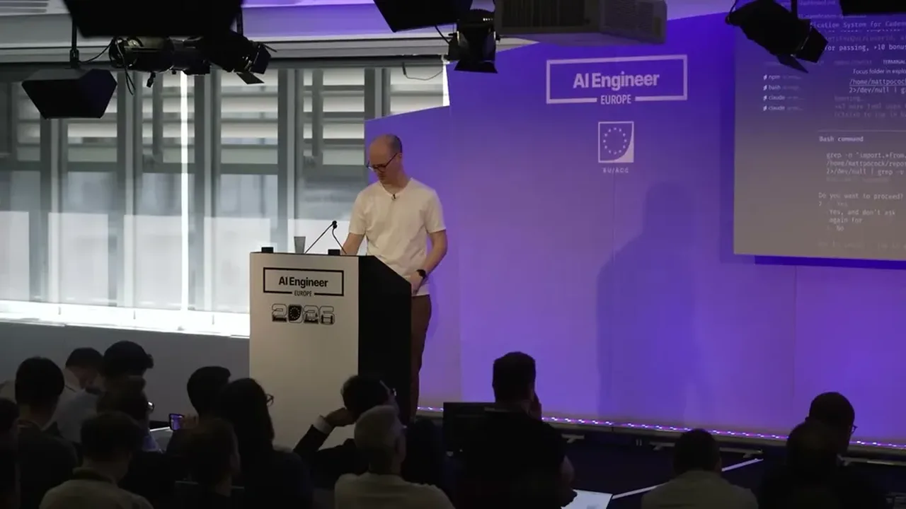
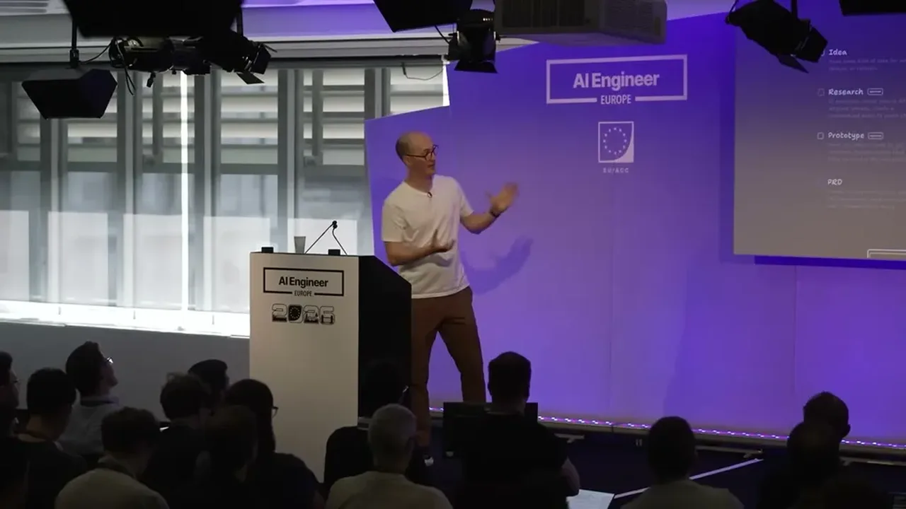
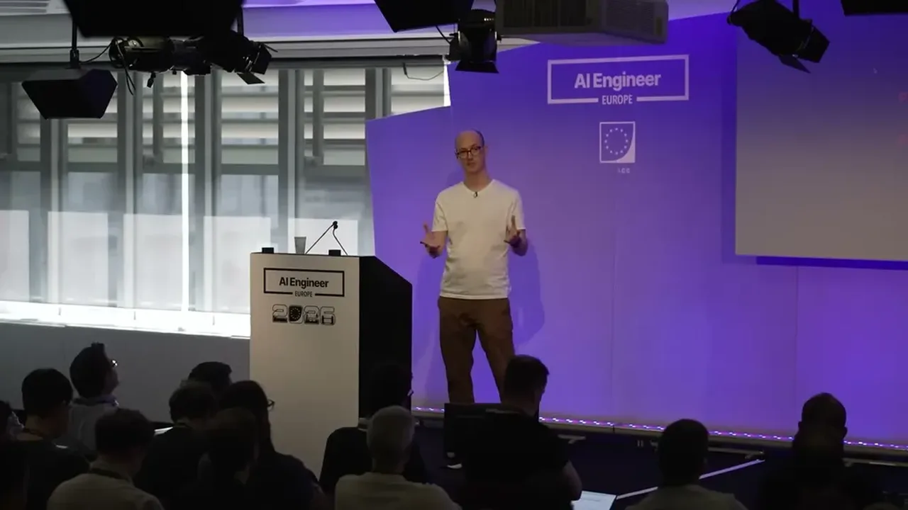
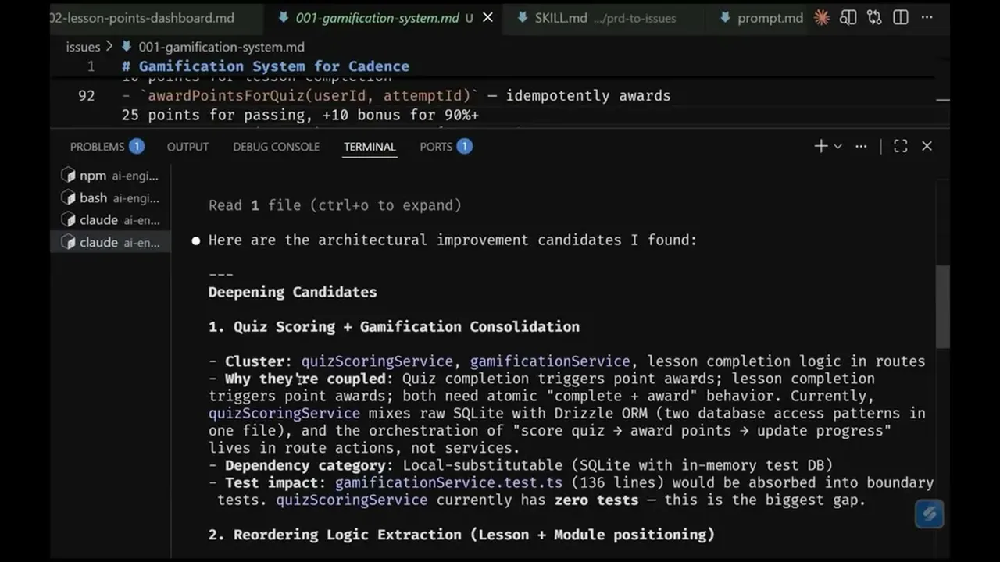
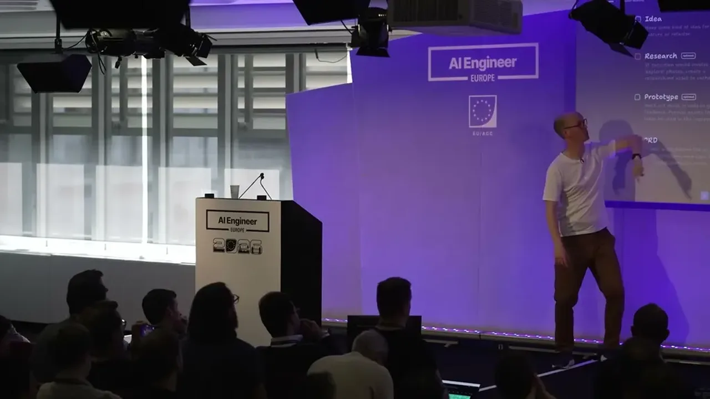
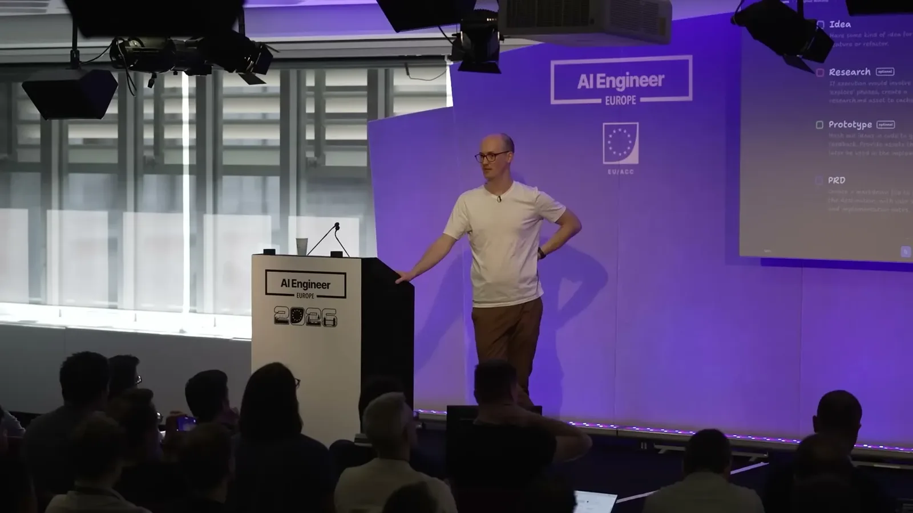
| Stance | Claim | t |
|---|---|---|
| asserts | Adding tokens to an LLM's context is like adding teams to a football league: the number of pairwise attention relationships scales quadratically. | 03:37 |
| asserts | The point where an LLM starts making worse decisions is about 100K tokens regardless of whether the advertised context window is 1M or 200K. | 04:07 |
| recommends | The always-in-context system prompt should be kept as small as possible, since a bloated one (he cites people using 250K tokens there) pushes a session toward the dumb zone immediately. | 07:41 |
| recommends | A short skill instructs the agent to interview the user on every aspect of a plan until a shared understanding is reached, before any plan or code is produced. | 15:55 |
| warns | Treating code as disposable and only editing the spec (specs-to-code) fails because the developer needs to keep a handle on the code itself. | 13:21 |
| recommends | Test-driven development is essential to getting good output from coding agents. | 66:21 |
| recommends | Breaking work into vertical slices (traceable bullets), rather than horizontal phases, gives near-instant feedback on whether all layers of a feature work together. | 41:55 |
| warns | Left unguided, AI tends to code layer by layer (database, then API, then front end) rather than in vertical slices, delaying integrated feedback until late phases. | 42:55 |
| asserts | A code base that is easy to test produces better feedback loops, which leads to better AI-generated code. | 76:43 |
| recommends | Tasks split into two types: human-in-the-loop (planning, alignment) that need a person present, and AFK tasks (implementation) that can run unattended. | 26:20 |
Machine-readable copy embedded in this page (script#ontology) and in the corpus ontology.